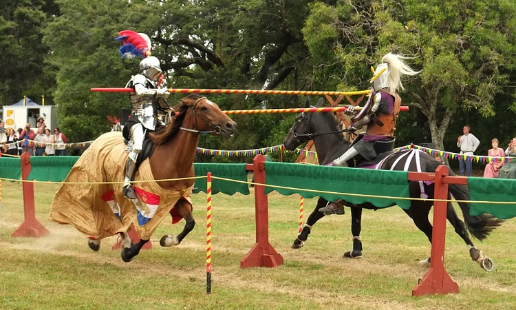
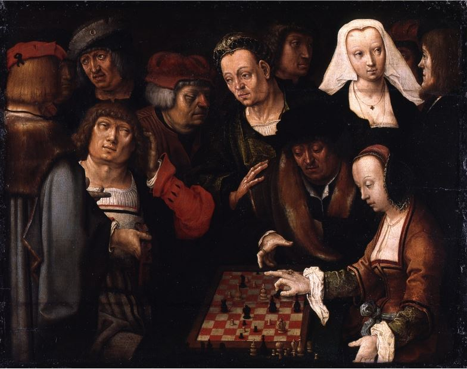

Origem dos Esportes
Os esportes surgiram na antiguidade como forma de competição, treinamento militar e entretenimento. Civilizações como os egípcios, gregos e romanos já praticavam diversas atividades físicas organizadas.
Grécia Antiga
Na Grécia Antiga nasceram os Jogos Olímpicos, realizados pela primeira vez em 776 a.C. Esses jogos eram dedicados aos deuses e reuniam atletas de várias cidades.
Esportes na Antiguidade
- Corrida
- Luta
- Lançamento de disco
- Lançamento de dardo
Esportes na Era Moderna
Com o passar do tempo, os esportes foram se organizando com regras oficiais. No século XIX surgiram esportes modernos como o futebol, basquete e vôlei.
Jogos Olímpicos Modernos
Os Jogos Olímpicos modernos foram recriados em 1896 e continuam sendo o maior evento esportivo do mundo, reunindo atletas de diversos países.
Curiosidades
- Os primeiros Jogos Olímpicos não tinham medalhas de ouro
- Mulheres não podiam participar na antiguidade
- Hoje existem centenas de modalidades esportivas
Esportes na Idade Média
Durante a Idade Média, muitos esportes estavam ligados ao treinamento militar, como torneios de cavaleiros e arco e flecha.
Galeria


